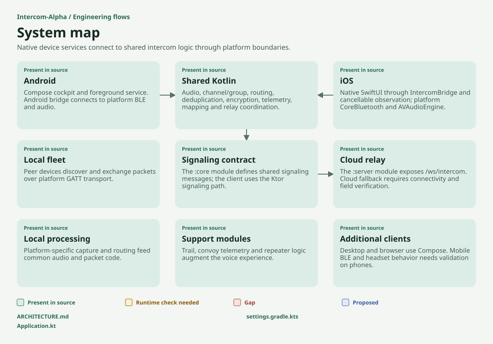

Group voice for the road and trail.
Intercom-Alpha is a mobile intercom for riders and outdoor groups. The project is designed to carry voice between nearby phones over Bluetooth Low Energy when mobile coverage drops.
View the projectBuilt for phones
- Android
- Compose client with platform Bluetooth and audio integration.
- iOS
- Native SwiftUI client with platform Bluetooth and audio integration.
Both clients are in development. The project documentation tracks platform verification and release milestones.
How it fits together
The mobile clients share Kotlin logic for audio, groups, and packet routing. BLE is the local path. A Ktor relay provides a fallback path where connectivity and configuration allow it.
